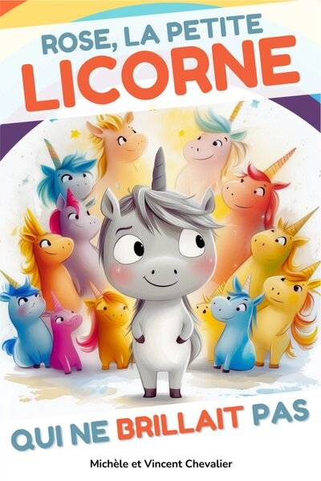
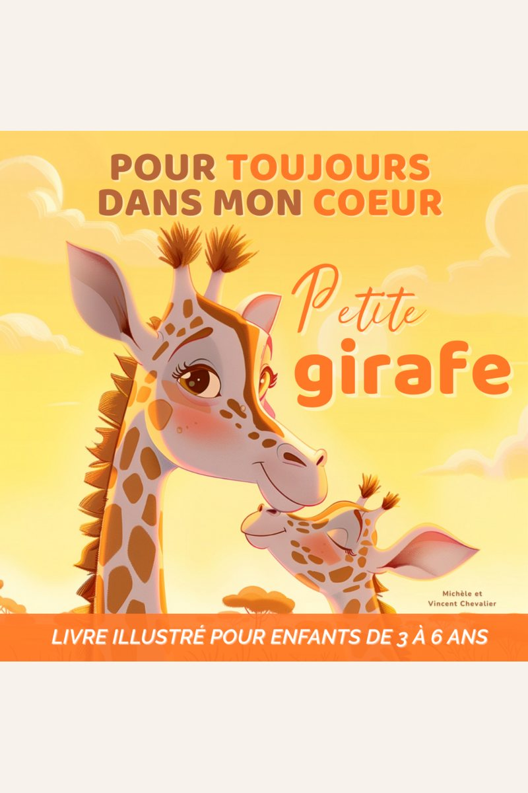
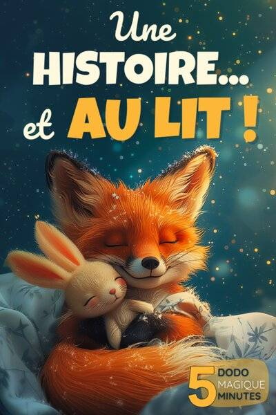
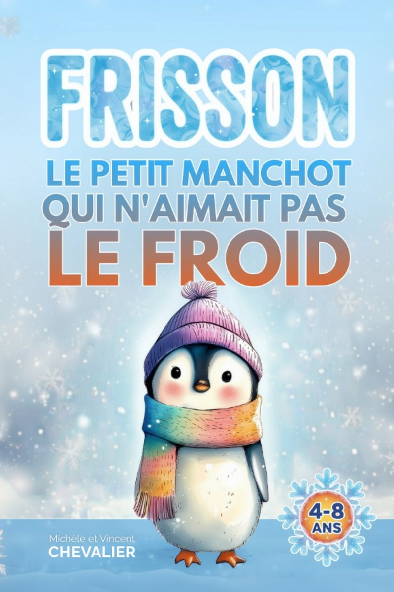
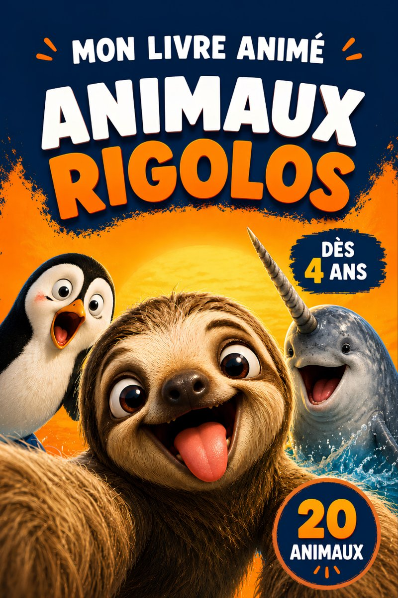
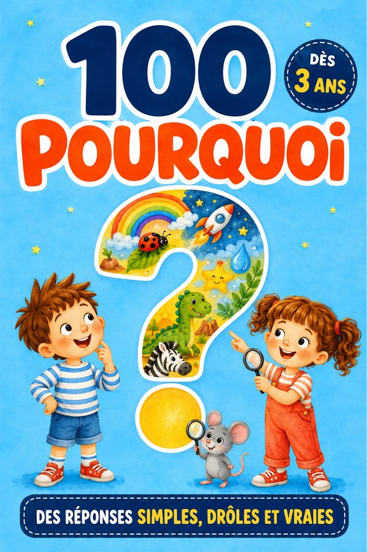
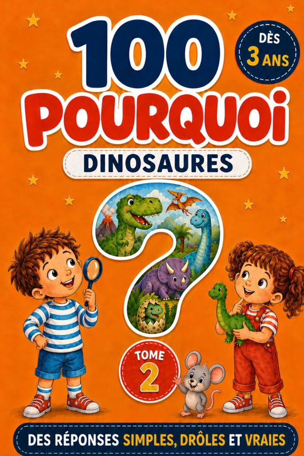

Rose, la petite licorne qui ne brillait pas
Rose refuse de briller, jusqu’au jour où elle découvre sa propre magie. Une histoire douce sur l’acceptation de soi.
★★★★★4,6 · 200 avis12,99 €
Entre 3 et 5 ans, l’enfant ne lit pas encore seul : il écoute, regarde, pose mille questions. Voici nos sept livres pensés pour cet âge, à lire à voix haute, le soir ou à la demande.
À 3 ans, l’attention dure quelques minutes. Un album qui se lit en une fois, avant de dormir, vaut mieux qu’un long récit.
L’enfant « lit » d’abord les illustrations. Une image par page l’aide à suivre l’histoire, puis à la raconter à son tour.
Vers 4-5 ans, les questions fusent. Un livre de questions-réponses courtes nourrit cette curiosité sans la noyer.
Les enfants aiment entendre la même histoire dix fois. C’est normal : c’est ainsi qu’ils s’approprient les mots.
Pour toujours dans mon cœur, Petite girafe se lit à voix haute en quelques minutes, au format carré. Une histoire… et au lit ! propose sept histoires d’animaux de cinq minutes, une par soir. Et Mon Livre Animé des Animaux Rigolos fait bouger les animaux sur l’écran d’un parent, grâce à un code par page.
Deux albums sur la confiance et le courage, avec des héros qui doutent, comme lui : Rose, la petite licorne qui ne brillait pas et Frisson, le petit manchot qui n’aimait pas le froid, à lire ensemble dès 4 ans.
L’âge des « pourquoi ? ». 100 Pourquoi : Ma Première Encyclopédie répond aux questions sur le corps, les animaux, le ciel et l’espace ; 100 Pourquoi des Dinosaures fait de même pour les fans de T-rex. Une question par page : on pioche, on lit, on recommence.
Tous imprimés en couleurs, au format broché, et vendus sur Amazon.fr. L’âge indiqué est celui pour lequel le texte a été écrit.

Rose refuse de briller, jusqu’au jour où elle découvre sa propre magie. Une histoire douce sur l’acceptation de soi.

Tissaïa la petite girafe découvre la savane. Un album tendre à lire avant la nuit.

Sept histoires courtes, drôles et tendres, une pour chaque soir de la semaine.

Un petit manchot frileux, une banquise, et beaucoup de courage. Sur l’amitié, pour les 4-8 ans.

Les animaux les plus étonnants de la planète, à faire bouger page après page.

Animaux, espace, corps, nature : cent vraies questions d’enfants, cent réponses courtes et justes. Avec Pip la souris à retrouver.

Cent questions-réponses simples, drôles et exactes sur les dinosaures. Dès 3 ans, en lecture partagée.
Vers 6 ou 7 ans, au CP puis au CE1. Avant, ce sont des livres à lire à deux. Rose, la petite licorne qui ne brillait pas se lit seul dès 6 ans, Frisson, le petit manchot qui n’aimait pas le froid vers 7 ans.
Un album court, à lire avant de dormir : Pour toujours dans mon cœur, Petite girafe, ou Une histoire… et au lit !, sept histoires de cinq minutes, une par soir.
Oui. 100 Pourquoi : Ma Première Encyclopédie est accompagné d’une fiche pédagogique gratuite, de la grande section au CE1.
Oui : nous offrons un livre par famille, en entier, à lire en ligne ou à télécharger en PDF. Choisir mon livre offert
Choisissez un livre : il s’ouvre aussitôt, à lire en ligne ou à télécharger en PDF. Un livre par famille.
Responsable : Famille Chevalier.
Données collectées : adresse email et livre choisi, uniquement via le formulaire du livre offert et l’inscription aux nouvelles parutions ; dans l’espace parents du jeu « L’Arène des Duels », l’adresse email du parent qui demande le champion secret.
Finalité : remise du livre choisi (lecture en ligne ou téléchargement) et, une semaine plus tard, un seul message pour vérifier qu’il vous est bien parvenu ; pour le jeu, l’envoi du code demandé ; avec votre consentement, l’annonce de nos nouvelles parutions et de nos grands rendez-vous (lancement d’un livre, opérations de Noël), quelques envois par an.
Base légale : votre consentement explicite (case à cocher).
Conservation : tant que vous êtes inscrit(e) ; suppression sur simple demande.
Partage : vos données ne sont ni vendues ni transmises à des tiers. Seuls nos prestataires techniques les traitent, pour notre compte : Google (formulaire et fichier des inscrits) et Brevo, société française qui envoie nos emails.
Mesure d’audience : les liens de nos emails (livre offert, message de vérification, annonces) sont propres à chaque destinataire. Ils nous indiquent si vous avez ouvert le livre, visité une page ou cliqué vers Amazon. Brevo ajoute à chaque email une image invisible et fait passer les liens par ses serveurs : il compte ainsi les ouvertures et les clics de façon globale, sans les relier à votre adresse. Quand vous arrivez par l’un de nos liens, votre identifiant est gardé dans votre navigateur le temps de la visite. Sur le site, nous comptons aussi les pages vues (la page et la provenance : type de site, ou nom du site d’origine s’il n’entre dans aucun type, jamais l’adresse exacte de la page) et les clics vers Amazon, sans cookie, et sans vous identifier si vous ne venez pas d’un de nos emails. Ces informations servent uniquement à mesurer l’intérêt pour nos livres et à écarter les abus ; elles ne sont jamais transmises à des tiers. Pour vous opposer à ce suivi, écrivez-nous.
Jeu « L’Arène des Duels » : le jeu ne demande rien à l’enfant (ni compte, ni prénom) et garde sa progression sur l’appareil. Pour savoir s’il plaît, il compte les ouvertures, les parties et les animaux gagnés, par type d’appareil (téléphone, tablette, ordinateur), sans cookie ni identifiant : rien ne permet de reconnaître un enfant ou un appareil. Ces compteurs, envoyés à notre script Google, sont additionnés chaque jour et servent uniquement à mesurer l’intérêt pour le jeu. L’espace parents du jeu permet de couper ce comptage (« Compter cet appareil : NON »). Le mode « chacun son téléphone » passe par un service de mise en relation (PeerJS) le temps d’une partie ; rien n’est conservé.
Vos droits : accès, rectification, suppression, opposition — en écrivant à contact@editions-chevalier.fr. Demande traitée sous 48 heures.
Éditeur du site : Famille Chevalier, activité d’édition indépendante.
Directrice éditoriale : Michèle Chevalier.
Contact : contact@editions-chevalier.fr
Hébergeur : GitHub, Inc. — 88 Colin P Kelly Jr St, San Francisco, CA 94107, États-Unis.
Propriété intellectuelle : l’ensemble du contenu de ce site (textes, illustrations, couvertures) est protégé par le droit d’auteur. Toute reproduction est interdite sans autorisation écrite.
Cookies : ce site n’utilise aucun cookie de traçage ni outil d’analyse tiers.
Droit applicable : droit français.